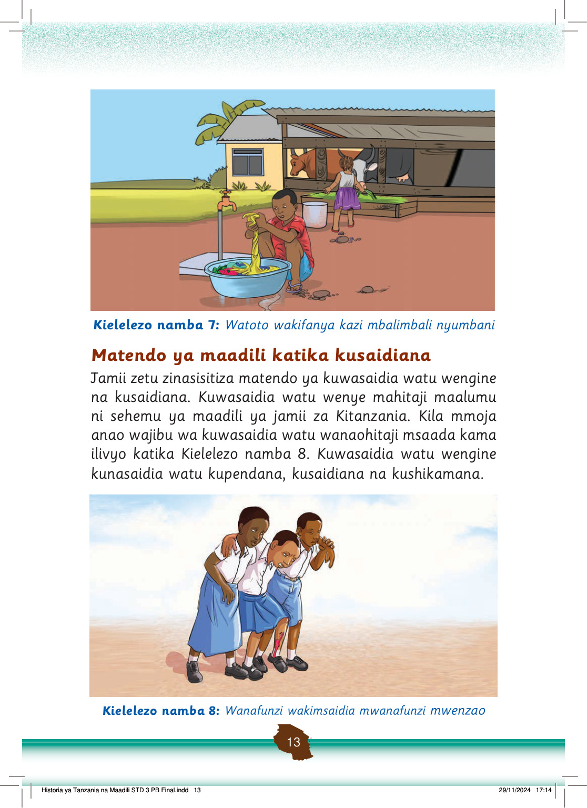

Kazi ya kufanya namba 7
Andika matendo mengine ya kimaadili katika kusaidiana shuleni na nyumbani.
Kuhusiana na watu wengine
Uhusiano mwema ni sehemu ya matendo ya kimaadili.
Uhusiano mwema huzuia malumbano na ugomvi kati ya mtu na mtu.
Uhusiano mwema kati yetu hujengwa kwa kuonesha upendo, kuheshimiana na kutosema uongo dhidi ya watu wengine.
Pia, matendo kama kuwasiliana kwa lugha isiyo ya ukali na matusi na kuwasikiliza watu wengine yanaashiria uhusiano mwema.
Vilevile, matendo ya kucheza na kusoma pamoja huonesha uhusiano mwema kati yetu na watu walio karibu nasi.
Chunguza matendo katika picha zifuatazo katika Kielelezo namba 9, kisha jibu zoezi linalofuata.
Wanafunzi wamekaa chini ya mti wakisoma na kujadiliana pamoja mbele ya darasa lao.
Wanafunzi wanashirikiana kutengeneza vitu vya udongo wakiwa shuleni.
Kielelezo namba 9: Matendo ya kuhusiana shuleni
Historia ya Tanzania na Maadili STD 3 PB Final.indd 14
29/11/2024 17:14
Zoezi la 3
1. Eleza matendo yanayofanyika katika Kielelezo namba 9.
2. Eleza faida za matendo yanayofanyika katika Kielelezo namba 9.